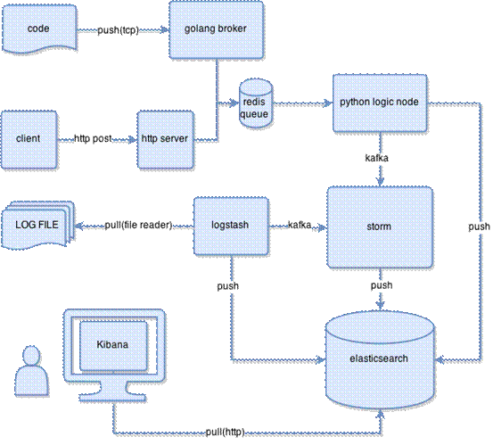
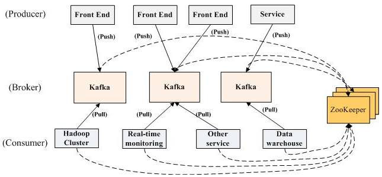
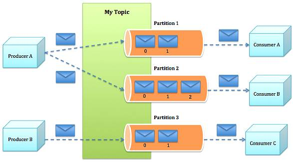
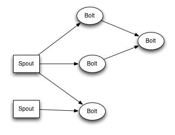
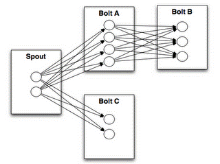
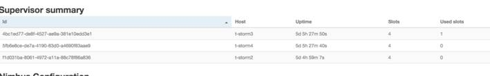
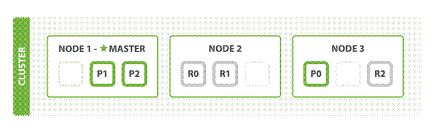

目录
ELK日志分析系统介绍与运维相关记录文档
日志分析系统整体架构

Kafka子系统简介
Kafka是一种分布式的，基于发布/订阅的消息系统。主要设计目标如下：
以时间复杂度为O(1)的方式提供消息持久化能力，即使对TB级以上数据也能保证常数时间的访问性能 高吞吐率。即使在非常廉价的商用机器上也能做到单机支持每秒100K条消息的传输 支持Kafka Server间的消息分区，及分布式消费，同时保证每个partition内的消息顺序传输 同时支持离线数据处理和实时数据处理
Kafka架构

Kafka的整体架构非常简单，是显式分布式架构，producer、broker（kafka）和consumer都可以有多个。Producer，consumer实现Kafka注册的接口，数据从producer发送到broker，broker承担一个中间缓存和分发的作用。broker分发注册到系统中的consumer。broker的作用类似于缓存，即活跃的数据和离线处理系统之间的缓存。客户端和服务器端的通信，是基于简单，高性能，且与编程语言无关的TCP协议。几个基本概念：
- Topic：特指Kafka处理的消息源（feeds of messages）的不同分类。
- Partition：Topic物理上的分组，一个topic可以分为多个partition，每个partition是一个有序的队列。partition中的每条消息都会被分配一个有序的id（offset）。
- Message：消息，是通信的基本单位，每个producer可以向一个topic（主题）发布一些消息。
- Producers：消息和数据生产者，向Kafka的一个topic发布消息的过程叫做producers。
- Consumers：消息和数据消费者，订阅topics并处理其发布的消息的过程叫做consumers。
- Broker：缓存代理，Kafka集群中的一台或多台服务器统称为broker。
消息发送的流程：

- Producer根据指定的partition方法（round-robin、hash等），将消息发布到指定topic的partition里面
- kafka集群接收到Producer发过来的消息后，将其持久化到硬盘，并保留消息指定时长（可配置），而不关注消息是否被消费。
- Consumer从kafka集群pull数据，并控制获取消息的offset
kafka集群安装
JAVA环境
yum install java-1.7.0-openjdk-devel
ZOOKEEPER安装配置：
下载最新版
http://mirrors.cnnic.cn/apache/zookeeper/zookeeper-3.4.6/zookeeper-3.4.6.tar.gz 解压，进入目录
zookeeper-3.4.6/confcp zoo_sample.cfg zoo.cfg 配置如下：
tickTime=2000initLimit=10syncLimit=5dataDir=/home/zookeeper/dataclientPort=2181server.1=10.104.23.206:2888:2999 server.2=10.104.23.207:2888:2999 server.3=10.251.169.57:2888:2999 在各自机器上dataDir目录下添加myid 如：server.2上输入
echo 2 > /home/zookeeper/data/myid 配置zookeeper日志
在zkEnv.sh中添加ZOO_LOG_DIR=/var/log/zookeeper 修改../conf/log4j.propertieszookeeper.log.dir=/var/log/zookeeperzookeeper.tracelog.dir=/var/log/zookeeper 注释掉：#log4j.rootLogger=${zookeeper.root.logger} 去掉注释：log4j.rootLogger=TRACE, CONSOLE, ROLLINGFILE, TRACEFILE 创建zookeeper日志目录
mkdir -p /var/log/zookeeper/ chown -R bot.qbdev /var/log/zookeeper/ 测试zookeeper
进入 zookeeper/bin
执行命令./zkCli.sh [zk: localhost:2181(CONNECTED) 0] ls /[admin, zookeeper, pyleus-kafka-offsets, consumers, config, controller, storm, brokers, controller_epoch] zookeep完成，退出
安装KAFKA
wget https://www.apache.org/dyn/closer.cgi?path=/kafka/0.8.2.1/kafka-0.8.2.1-src.tgz 解压并修改配置：config/server.propertieszookeeper.connect=10.104.23.206:2181,10.104.23.207:2181,10.251.169.57:2181 创建topic测试./kafka-topics.sh --create --zookeeper localhost:2181 --replication-factor 3 --partitions 3 --topic my-replicated-topicCreated topic "my-replicated-topic". ./kafka-topics.sh --list --zookeeper 10.104.23.206:2181my-replicated-topic ./kafka-topics.sh --describe --zookeeper localhost:2181 --topic my-replicated-topicTopic:my-replicated-topic PartitionCount:1 ReplicationFactor:3 Configs: Topic: my-replicated-topic Partition: 0 Leader: 4 Replicas: 4,2,3 Isr: 4,2,3 我们可以通过Kafka自带的bin/kafka-console-producer.sh和bin/kafka-console-consumer.sh脚本，来验证演示如果发布消息、消费消息。 在一个终端，启动Producer，并向我们上面创建的名称为my-replicated-topic5的Topic中生产消息，执行如下脚本：bin/kafka-console-producer.sh --broker-list h1:9092,h2:9092,h3:9092 --topic my-replicated-topic5bin/kafka-console-producer.sh --broker-list localhost:9092 --topic im-msg 在另一个终端，启动Consumer，并订阅我们上面创建的名称为my-replicated-topic5的Topic中生产的消息，执行如下脚本：bin/kafka-console-consumer.sh --zookeeper h1:2181,h2:2181,h3:2181 --from-beginning --topic my-replicated-topic5bin/kafka-console-consumer.sh --zookeeper localhost:2181 --from-beginning --topic im-msg 如果收到消息，表示kafka集群运行正常
Storm子系统简介
Storm组件说明
- storm包含两种节点：master和worker；
- master上运行Nimbus，负责：distribute code、assign task、monitor failutes；
- worker上运行Supervisor，负责：监听Nimbus分配的任务，并启停worker precess；
- zookeeper负责协调Nimbus和Supervisor之间的关系，所有状态信息都存储在zookeeper or local host；因此，重启Nimbus or Supervisor进程，对用户来说无影响；

关于 spout 和 bolt ，说几点：
- spout（龙卷风、气旋）： source of stream，向topology中拉入数据的原点；
- bolt（闪电）：处理 stream，通过run functions、filter tuples、do streaming aggregations、do streaming join、talk to database… 来做任何事情；
- topology：由spout、bolt以及他们之间的关系构成，是client提交给Storm cluster执行的基本单元； topology中所有node都是并发运行的，可以配置每个node的并发数；

- notes(ningg)：topology中node是什么概念？spout、bolt？master、worker？jvm process？thread？ RE：master、worker对应Storm的node，master负责控制，worker负责具体执行；spout、bolt是逻辑上的，并且分布在不同的worker上；每个spout、bolt可配置并发数，这个并发数对应启动的thread；不同的spout、bolt对应不同的thread，thread间不能共用；这些所有的thread由所有的worker process来执行，举例，累计300个thread，启动了30个worker，则平均每个worker process对应执行10个thread（前面的说法对吗？哈哈）
关于数据模型，即数据的结构，说几点：
- Storm中，使用tuple结构来存储数据，tuple由fields构成，field可以为任意类型；
- topology中spout、bolt必须声明其emit的tuple格式：declareOutputFields()；
- setSpout/setBolt用于定义spout和bolt，输入参数：node id、processing logic、amount of parallelism；
- processing logic对应类spout/bolt，需要implement IRichSpout/IRichBolt；
Storm有两种执行模式，local mode和distributed mode，补充几点：
- local mode，在本地的process中通过thread模拟worker，多用于testing和development topology；
- distributed mode，用户向master提交topology以及运行topology所需的所有code；master向worker分发topolog
关于Stream groupings，几点：
- stream grouping解决的问题：多个执行spout逻辑的thread都输出tuple，这些tuple要发送给bolt对应的多个thread，问题来了，tuple发给bolt的哪个thread？即，stream grouping解决：tuple在不同task之间传递关系；
- shuffle grouping，随机分发；field grouping，根据给定的field进行分发；

安装storm
1、前期准备：
- "10.104.23.206" #t-storm2 - "10.104.23.207" #t-storm3 - "10.251.169.57" #t-storm4共3台，每台上面均有storm,zookeeper，以t-storm2为主节点
java环境
yum install java-1.7.0-openjdk-devel 2、下载storm包
wget http://mirror.bit.edu.cn/apache/incubator/storm/apache-storm-0.9.2-incubating/apache-storm-0.9.2-incubating.tar.gz 解压、进入conf目录
配置storm.yaml：（zookeeper安装参见kafka）
storm.zookeeper.servers: - "10.104.23.206" #t-storm2 - "10.104.23.207" #t-storm3 - "10.251.169.57" #t-storm4# nimbus.host: "10.104.23.206" 在master节点启动：
nohup storm nimbus &nohup storm ui &nohup storm supervisor & 在其他nodes节点只需启动supervisor
打开WEB界面
可看到有3个supervisor

Elasticsearch子系统简介
Elasticsearch 是一个建立在全文搜索引擎 Apache Lucene(TM) 基础上的搜索引擎，可以说 Lucene 是当今最先进，最高效的全功能开源搜索引擎框架。
但是 Lucene 只是一个框架，要充分利用它的功能，你需要使用 JAVA，并且在你的程序中集成 Lucene。更糟的是，你需要做很多的学习了解，才能明白它是如何运行的，Lucene 确实非常复杂。
Elasticsearch 使用 Lucene 作为内部引擎，但是在你使用它做全文搜索时，只需要使用统一开发好的API即可，而并不需要了解其背后复杂的 Lucene 的运行原理。
当然 Elasticsearch 并不仅仅是 Lucene 那么简单，它不仅包括了全文搜索功能，还可以进行以下工作:
- 分布式实时文件存储，并将每一个字段都编入索引，使其可以被搜索。
- 实时分析的分布式搜索引擎。
- 可以扩展到上百台服务器，处理PB级别的结构化或非结构化数据。
- 这么多的功能被集成到一台服务器上，你可以轻松地通过客户端或者任何你喜欢的程序语言与 ES 的 RESTful API 进行交流。
Elasticsearch 的上手是非常简单的。它附带了很多非常合理的默认值，这让初学者很好地避免一上手就要面对复杂的理论，它安装好了就可以使用了，用很小的学习成本就可以变得很有生产力。
Elasticsearch 的分布式
你甚至不需要关于分布式系统的任何内容，比如分片、集群、发现等成堆的分布式概念。你可能在你的笔记本中运行着刚才的教程，如果你想在一个拥有100个节点的集群中运行教程，你会发现操作是完全一样的。
Elasticsearch 很努力地在避免复杂的分布式系统，很多操作都是自动完成的：
- 可以将你的文档分区到不同容器或者 分片 中，这些文档可能被存在一个节点或者多个节点。
- 跨节点平衡集群中节点间的索引与搜索负载。
- 自动复制你的数据以提供冗余副本，防止硬件错误导致数据丢失。
- 自动在节点之间路由，以帮助你找到你想要的数据。
- 无缝扩展或者恢复你的集群。
安装 Elasticsearch
安装 Elasticsearch 只有一个要求，就是要安装最新版本的JAVA。你可以到官方网站下载它：www.java.com.
你可以在这里下载到最新版本的 Elasticsearch： elasticsearch.org/download.
curl -L -O http://download.elasticsearch.org/PATH/TO/LATEST/$VERSION.zipunzip elasticsearch-$VERSION.zipcd elasticsearch-$VERSION 运行 Elasticsearch
单机运行./bin/elasticsearch -d (后台运行)
测试：[root@t-elastic1 ~]# curl 'http://localhost:9200/?pretty'{ "status" : 200, "name" : "t-elastic1", "version" : { "number" : "1.4.4", "build_hash" : "c88f77ffc81301dfa9dfd81ca2232f09588bd512", "build_timestamp" : "2015-02-19T13:05:36Z", "build_snapshot" : false, "lucene_version" : "4.10.3" }, "tagline" : "You Know, for Search"} elastic集群
下面我们来配置elastic的集群
- 集群的配置更为简单，只需要保证cluster.name一致就可以了
- 集群之间的自动发现，默认是采用广播形式，不过为了避免非同一子网导致广播失效，最好配置成单播模式
配置文件 ： config/elasticsearch.ymlcluster.name: qb-elasticsearchnode.name: "t-elastic1"node.master: truenode.data: truebootstrap.mlockall: truediscovery.zen.ping.unicast.hosts: ["t-elastic1","t-elastic2","t-elastic3"] 说明: 3台elastic的集群，其中t-elastic1做为master，其他两台为node

查看集群状态：
在 Elasticsearch 集群中可以监控统计很多信息，其中最重要的就是：集群健康(cluster health)。它的 status 有 green、yellow、red 三种；
curl http://localhost:9200/_cluster/health?pretty{ "cluster_name" : "qb-elasticsearch", "status" : "green", "timed_out" : false, "number_of_nodes" : 3, "number_of_data_nodes" : 3, "active_primary_shards" : 59, "active_shards" : 118, "relocating_shards" : 0, "initializing_shards" : 0, "unassigned_shards" : 0} status 可以告诉我们当前集群是否处于一个可用的状态。三种颜色分别代表：
|
状态 |
意义 |
|
green |
所有主分片和从分片都可用 |
|
yellow |
所有主分片可用，但存在不可用的从分片 |
|
red |
存在不可用的主要分片 |
elastic 权限控制
先来看下ELASTIC的API
elastic是通过 HTTP 向 RESTful API 传送 json
其他的语言可以通过9200端口与 Elasticsearch 的 RESTful API 进行通信。事实上，如你所见，你甚至可以使用行命令 curl 来与 Elasticsearch 通信。
向 Elasticsearch 发出的请求和其他所有的 HTTP 请求的组成部分是一致的。例如，计算集群中文件的数量，我们就可以使用：
curl -XGET 'http://localhost:9200/_count?pretty' -d '{ "query": { "match_all": {} }}'
- 相应的 HTTP 请求方法 或者 变量 : GET, POST, PUT, HEAD 或者 DELETE。
- 集群中任意一个节点的访问协议、主机名以及端口。
- 请求的路径。
- 任意一个查询后再加上 ?pretty 就可以生成 更加美观 的JSON反馈，以增强可读性。
- 一个 JSON 编码的请求主体（如果需要的话）。
Elasticsearch 将会返回一个 HTTP 状态码类似于 '200 OK'，以及一个 JSON 格式的主体（除了单纯的 'HEAD' 请求），上面的请求会得到下方的 JSON 主体：
{ "count" : 0, "_shards" : { "total" : 5, "successful" : 5, "failed" : 0 }} 几乎只要能连接上elastic 的http 9200端口，所有操作（增、删、改、查）都可以进行，自身没有任何权限控制
下面我们通过第三方插件形式对api进行权限控制
官方插件：
https://www.elastic.co/downloads/shield 安装使用很简单：
Security for Elasticsearch, in Five Easy StepsStep 1: Install bin/plugin -i elasticsearch/license/latestbin/plugin -i elasticsearch/shield/latestStep 2: Start Elasticsearch bin/elasticsearchStep 3: Add an admin user bin/shield/esusers useradd es_admin -r adminStep 4: Try it out - secured curl -XGET 'http://localhost:9200/'Step 5: And with a user curl -u es_admin -XGET 'http://localhost:9200/'
配置文件存放路径：config/shield/
# All cluster rights# All operations on all indicesadmin: cluster: all indices: '*': all # monitoring cluster privileges# All operations on all indicespower_user: cluster: monitor indices: '*': all # Read-only operations on indicesuser: indices: '*': read # Defines the required permissions for trasport clientstransport_client: cluster: - cluster:monitor/nodes/info #uncomment the following for sniffing #- cluster:monitor/state # The required role for kibana 3 userskibana3: cluster: cluster:monitor/nodes/info indices: '*': indices:data/read/search, indices:data/read/get, indices:admin/get 'kibana-int': indices:data/read/search, indices:data/read/get, indices:data/write/delete, indices:data/write/index, create_index # The required permissions for kibana 4 users.kibana4: cluster: - cluster:monitor/nodes/info - cluster:monitor/health indices: '*': - indices:admin/mappings/fields/get - indices:admin/validate/query - indices:data/read/search - indices:data/read/msearch - indices:admin/get '.kibana': - indices:admin/exists - indices:admin/mapping/put - indices:admin/mappings/fields/get - indices:admin/refresh - indices:admin/validate/query - indices:data/read/get - indices:data/read/mget - indices:data/read/search - indices:data/write/delete - indices:data/write/index - indices:data/write/update - indices:admin/create # The required permissions for the kibana 4 serverkibana4_server: cluster: - cluster:monitor/nodes/info - cluster:monitor/health indices: '.kibana': - indices:admin/exists - indices:admin/mapping/put - indices:admin/mappings/fields/get - indices:admin/refresh - indices:admin/validate/query - indices:data/read/get - indices:data/read/mget - indices:data/read/search - indices:data/write/delete - indices:data/write/index - indices:data/write/update # The required role for logstash userslogstash: cluster: indices:admin/template/get, indices:admin/template/put indices: 'logstash-*': indices:data/write/bulk, indices:data/write/delete, indices:data/write/update, indices:data/read/search, indices:data/read/scroll, create_index # Marvel role, allowing all operations# on the marvel indicesmarvel_user: cluster: cluster:monitor/nodes/info, cluster:admin/plugin/license/get indices: '.marvel-*': all # Marvel Agent usersmarvel_agent: cluster: indices:admin/template/get, indices:admin/template/put indices: '.marvel-*': indices:data/write/bulk, create_index
通过配置文件可以看出，权限控制精确到具体的接口，读写，以及常见的组件权限
elastic的备份
虽说elastic自身是分布式，可万一误操作，导致数据丢失就不是我们所能忍受的了。这里我们基于elastic的repository及snapshot特性，对kibana的配置做一次备份。
下面直接上脚本：
#!/bin/bash# 2015-04-01 DATE=`date +%F`DEL_DATE=`date +%F -d "-3 days"`echo $DATE ##create repository#curl -XPUT 'http://localhost:9200/_snapshot/kibana' -d '{# "type": "fs",# "settings": {# "location": "/home/bot/kibana_backup",# "compress": true# }#}'# ##查看repo#curl -XGET 'http://localhost:9200/_snapshot/kibana?pretty' ##create snapshot curl -XPUT "localhost:9200/_snapshot/kibana/kibana_repo_${DATE}" -d '{ "indices": ".kibana", "ignore_unavailable": "true", "include_global_state": false}' ##只保存最近3天 curl -XDELETE "localhost:9200/_snapshot/kibana/kibana_repo_${DEL_DATE}" ##恢复###恢复之前需要将index关闭#curl -XPOST 'localhost:9200/.kibana/_close' #curl -XPOST "localhost:9200/_snapshot/kibana/kibana_repo_${DATE}/_restore" ##恢复之后将index打开#curl -XPOST 'localhost:9200/.kibana/_open' Kafka子系统简介
Kibana 是为 Elasticsearch 设计的开源分析和可视化平台。你可以使用 Kibana 来搜索，查看存储在 Elasticsearch 索引中的数据并与之交互。你可以很容易实现高级的数据分析和可视化，以图标的形式展现出来。
Kibana 让海量数据变得更容易理解。简单的基于浏览器的界面让你可以快速创建并分享动态的仪表板，用以实时修改 Elasticsearch 请求。
具体的配置详见：http://kibana.logstash.es/content/v4/README.html